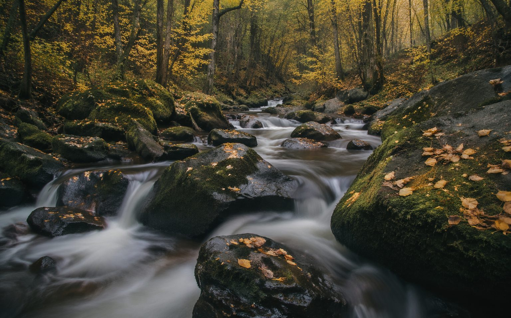

PHOTOS · 摄影
山涧

大明山的这条溪，是朋友带我去的，要走四十分钟野路。到的时候正午，光从林子顶上漏下来，落在溪水上，碎成一片。我把相机架在溪心的石头上，快门调到两秒——于是急流成了绢，石头成了岛，黄叶成了停着的船。
长曝光是种很诚实的摄影：它不截取瞬间，它坦白「这两秒里发生了什么」。水走了多远，叶动了几次，光挪了几寸，全都写在一张底片上。我们平日感知世界用的是「快门模式」，一帧一帧；其实世界一直是两秒两秒地过的，流动才是它的常态。
下山时裤脚全湿，鞋子进水，但心里很满。王维那句「明月松间照，清泉石上流」，我从前只当它是画，那天才听懂它是声音——是两个小时里，水一直在我耳边说的话。
完